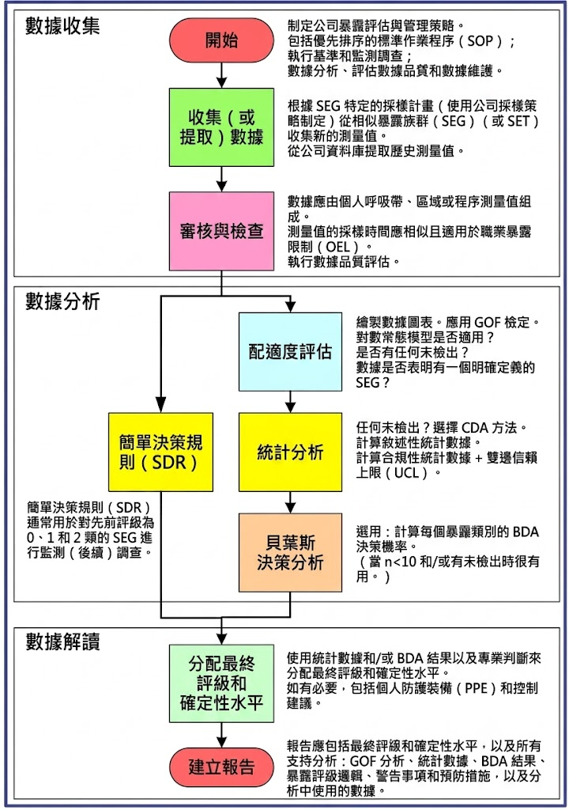
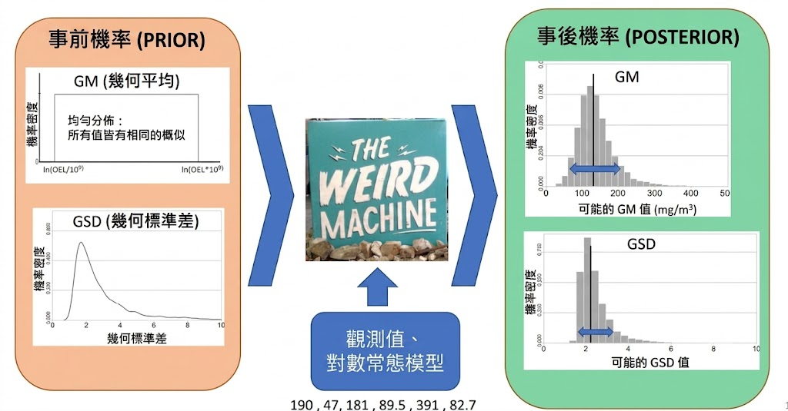
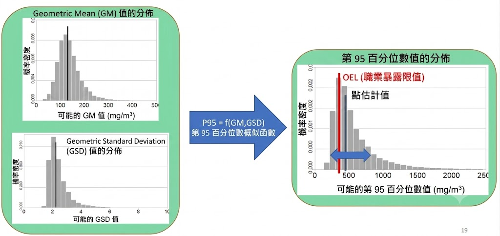

2026-07-30
做出準確的暴露風險決策
有效+效率：「有效」（確保沒有勞工暴露於不可接受的風險中） + 「有效率」（以最低成本達成） = 良好的暴露風險管理
降低錯誤判斷：低估暴露，會增加員工的健康風險；高估，會導致不必要的控制設備支出與生產限制。
消除人為偏誤：提供統計學訓練，提升判斷的準確性。
選項：1) 0、 2) 1、 3) 5、 4) 10、 5) 25、 6) 50
WHY？ 在統計學上，多數專業人員的共識是：不超過 5 天（即 5%） 超過 OEL。
界定決策的信心水準
Q：面對不確定性，你對自己的判斷有多大的把握（確定程度）？
「至少有 95% 的信心，確信真正的暴露值 \(X_{95}\) < OEL。」
因為「點估計」沒有考慮「抽樣誤差」，當樣本數很少時，點估計的信心很低，需要用 UTL（上限） 來「補償」不確定性。
Prompt
Q1：隨著科技進步，若使用直讀式儀器監測或即時偵測設備，且時間解析度可以到秒或分，紀錄便可完整呈現整天每天的暴露，這樣不是可以完整呈現變異性，且樣本數夠，這不就可以真實呈現人員或SEG的暴露實態？
Q2：如果把直讀式儀器測值的時間解析度，調整為8小TWA加權，或是15分鐘的STEL，這樣連續測定250天， 還有你上述說的自相關或是不符對數常態分布等等問題？
提醒
進行統計分析前，要先檢查暴露數據是否符合對數常態分佈。
使用免費的傳統統計工具（如 AIHA 提供的 IHSTAT）
| 分析方法 | 簡稱 | 核心適用情境 | 特點 |
|---|---|---|---|
| 簡單替代法 | (DL/2 或 DL/2) | * 適用於小樣本 (n<20) 且低到中等受限比例（<25% 至 25%−50%）的情況。 估計第 95 百分位數時，以 DL/2（即 LOD / 1.414）表現最合理。 | * 非常容易在一般的試算表（如 IHSTAT）中執行與實現。 |
| 最大概似估計法 | (MLE) | * 適用於各種數據分布，被視為最接近「最佳通用方法」的統計手段。 | * 統計效能與準確度極佳，但計算公式非常複雜。 |
| Beta 替代法 | β-Sub. | * 統計表現與最大概似估計法（MLE）非常類似。 | * 公式直觀，易於在 Excel 試算表中編寫程式進行計算。 |
| 對數機率迴歸(又稱順序統計量迴歸) | LPR或ROS | * 適合用於受限比例介於 25% 至 50%，且樣本數較大（n>10 或 15）的數據集。 | * 易於在試算表中編寫程式進行計算。 在特定樣本數下是極佳的分析選擇。 |
| 貝氏決策分析 | BDA | * 使用與 MLE 相同的數學方程，但在描述與量化參數的不確定性上具有更優異的表現。*可輕鬆處理包含完全受限（完全未檢出）的數據集。 | * 完全不需要數值替代（不需將 < 填補為特定數字）。 可直接將原始含小於符號的數據（如 <5）輸入 IHDA 或 Expostats 等分析工具中。 |
不要刪除數據：會嚴重低估暴露風險。
不要直接代入偵測極限值：傳統統計直接用原始的 LOD 數值（例如將 <5 直接代入 5）來進行常態分布運算，這會扭曲估計結果。
8, 25, <5, 10, <3, 7, 11），請使用工具進行暴露評估與建議。18, 15, 5, 8, 12 ppm（樣本數 n=5）
215, 52, 395, 700, 75 ppm。
利用先驗知識（Prior Knowledge）調整與加權參數空間universe(GM-GSD 組合)。
樣本監測值 (ppm)：13，26，18，32，18，13
樣本監測值 (ppm)：55，33，45，66，20
噪音監測(Dose (80, 5))：55.9，30.8，67.8，85.9，41.8，34.4 dBA
|
 |
別單一依賴 BDA，將其與現有的其他統計工具搭配使用。
在進行EA時，應同步驗證：
適配度與檢定：驗證對數常態分布的假設，避免模型失真。
敘述統計量。
合規統計：95%ile與不確定性上限 (UCL)。
得出結果後，自問(確保決策的科學性與合理性)：
Q1：「BDA 圖是否合理解釋數據？」
Q2：「哪一種解釋最可能是正確的？是 BDA 或現有的數據分析工具（傳統統計）？」
ref: Jérôme Lavoué, Lawrence Joseph, Peter Knott, Hugh Davies, France Labrèche, Frédéric Clerc, Gautier Mater, Tracy Kirkham, Expostats: A Bayesian Toolkit to Aid the Interpretation of Occupational Exposure Measurements, Annals of Work Exposures and Health, Volume 63, Issue 3, April 2019, Pages 267–279, https://doi.org/10.1093/annweh/wxy100
Tool 1：SEG 是否符合 OEL？
Tool 2：SEG 中不同勞工之間的暴露變異度有多大？
Tool 3：干預措施是否有效？SEGs間是否有顯著差異？
貝氏統計價值：即使不在現場，也能根據有限的樣本，推估並描述真實暴露輪廓的實況與不確定性。
190, 47, 181, 89.5, 391, 82.7 mg/m³。 |
 |
Styrene（苯乙烯）：190, 47, 181, 89.5, 391, 82.7 mg/m³。OEL=350
請進行EA、管理分級與專業建議 (依據產出圖表進行說明)
{kind=link}
{kind=link}
{kind=link}
{kind=link}
{kind=link}
{kind=link}
{kind=link}
{kind=link}
{kind=link}
{kind=link}
{kind=link}
{kind=link}
{kind=link}
{kind=link}
{kind=link}
{kind=link}
{kind=link}
{kind=link}
{kind=link}
{kind=link}
{kind=link}
{kind=link}
{kind=link}
{kind=link}
{kind=link}